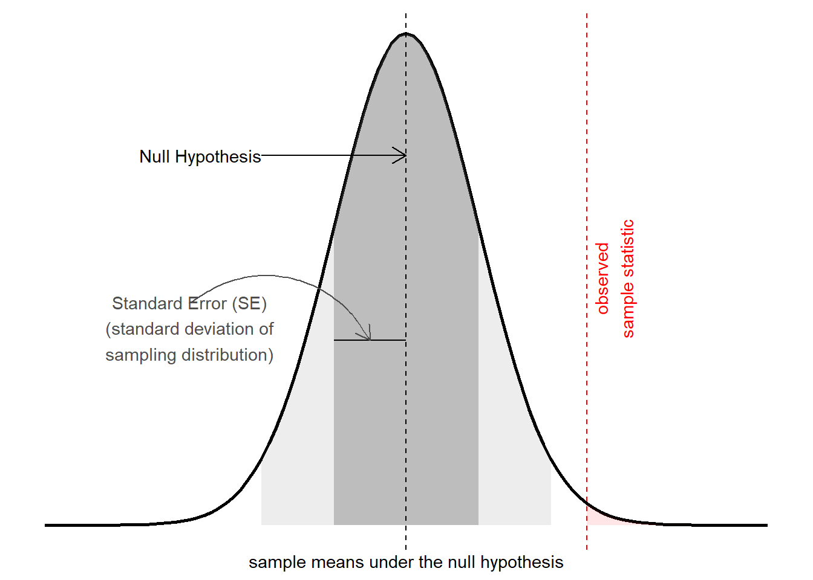
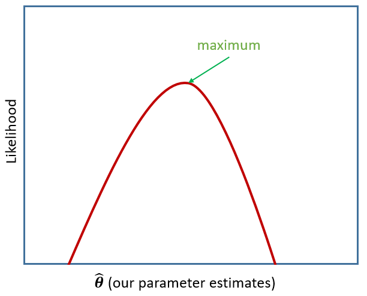

Inference for MLM
Inference
The term “inference” is used to refer to the process of moving from beyond a description of our specific sample to being able to make statements about the broader population from which we have sampled.
In the framework for statistics that we have been learning, this centers on the idea of sample statistics that we might see in the long run (i.e. if we did the experiment again and again and again with a new sample each time, see Figure 1). In USMR, we saw various ways in which this logic was applied, combining the observed sample statistic with the standard error to create a test statistic (\(z\), \(t\), \(\chi^2\), \(F\), then compared to the appropriate standard distribution).
In the linear models we were fitting with lm(), these were \(t\) (for the coefficient estimate) and \(F\) (the reduction in residual sums of squares) tests, and accordingly they had an associated degrees of freedom. If we fit a linear model lm(y~x) to 10 datapoints, then our tests would have \(10-2=8\)1 degrees of freedom, and test statistics would be compared against, e.g. a \(t\) distribution with 8 degrees of freedom. Alternatively, if we were to fit that model to 100 datapoints, we would be working with 98 degrees of freedom. The degrees of freedom reflects the fact that there is more variability in statistics from smaller samples. Another way of thinking of degrees of freedom is that they are the number of independent datapoints that are left “free to vary” around our model parameters.
But we are now working with multilevel data, and in the scenario where we have, e.g. \(n_p\) pupils clustered into \(n_s\) schools, how many independent bits of information do we have to begin with? Is it \(n_p\)? Or \(n_s\)? Or somewhere in between? Our random effects are not “free to vary” in the sense that they are estimated under certain constraints (such as following a normal distribution).
In very specific situations that correspond to classical experimental designs (in which, e.g., we have perfectly balanced numbers across experimental factors and equal sizes within groups) it is possible to conduct similar \(F\) tests (and hence \(t\)-tests too) with a known degrees of freedom. Unfortunately, transferring this to more general scenarios is problematic (e.g., any missing data, unbalanced designs, more complex random effect structures). Partly because defining the necessarily follow an \(F\) distribution with any degrees of freedom. It is for these reasons that the author of the lme4
However, there are various strategies that we can use to conduct inferences that either attempt to approximate the degrees of freedom, or use an alternative method based on, e.g., likelihoods or bootstrapping.
Below, we’ll go through each method in R, applying it to the following model (recall this is the model we ended with in reading 1B).
library(tidyverse)
library(lme4)
schoolmot <- read_csv("https://uoepsy.github.io/data/schoolmot.csv")
smod3 <- lmer(grade ~ motiv * funding + (1 + motiv | schoolid),
data = schoolmot)
df approximations (Satterthwaite)
Two methods have been suggested as approximations for the denominator degrees of freedom for multilevel models. The maths behind these are pretty intense, so we’re going to focus on how to implement them in R, and emphasise some of their respective benefits/drawbacks.
The Satterthwaite approximation is easily implemented by packages such as lmerTest. This package simply overwrites the lmer() function to use a version that has the degrees of freedom and associated p-values displayed in the summary.
It can be used for models fitted with either ML or REML, and generally scales well, so if you are fitting models to big datasets, it won’t take too much extra time.
tests of single parameters
smod3sat <- lmerTest::lmer(grade ~ motiv * funding +
(1 + motiv | schoolid),
data = schoolmot)
summary(smod3sat)Linear mixed model fit by REML. t-tests use Satterthwaite's method [
lmerModLmerTest]
Formula: grade ~ motiv * funding + (1 + motiv | schoolid)
Data: schoolmot
REML criterion at convergence: 7083.6
Scaled residuals:
Min 1Q Median 3Q Max
-3.08250 -0.67269 0.03043 0.63562 3.13012
Random effects:
Groups Name Variance Std.Dev. Corr
schoolid (Intercept) 105.124 10.253
motiv 2.595 1.611 -0.48
Residual 139.030 11.791
Number of obs: 900, groups: schoolid, 30
Fixed effects:
Estimate Std. Error df t value Pr(>|t|)
(Intercept) 40.3143 4.6414 26.7240 8.686 2.9e-09 ***
motiv 2.6294 0.8652 28.5939 3.039 0.00503 **
fundingstate -17.2531 5.7346 25.5625 -3.009 0.00583 **
motiv:fundingstate 2.8485 1.0591 26.5413 2.689 0.01221 *
---
Signif. codes: 0 '***' 0.001 '**' 0.01 '*' 0.05 '.' 0.1 ' ' 1
Correlation of Fixed Effects:
(Intr) motiv fndngs
motiv -0.782
fundingstat -0.809 0.633
mtv:fndngst 0.639 -0.817 -0.773Reporting
… degrees of freedom in the coefficients tests have been corrected via Satterthwaite’s method.
…
…
The association between childrens’ motivation level and their school grades was moderated by the type of school attended (state/private), with a 1 unit increase in motivation associated with an additional 2.85 point increase for children in state school in comparison to those attending private schools (\(b = 2.85,\ SE = 1.06,\ t(26.54^*) = 2.69,\ p = .012\)).
model comparisons
You can conduct model comparisons with an \(F\) test and the Satterthwaite df approximation using the function SATmodcomp() from the pbkrtest package:
smod3 <- lmer(grade ~ motiv * funding + (1 + motiv | schoolid),
data = schoolmot)
smod3_res <- lmer(grade ~ motiv + funding + (1 + motiv | schoolid),
data = schoolmot)
library(pbkrtest)
SATmodcomp(largeModel = smod3, smallModel = smod3_res)large : grade ~ motiv * funding + (1 + motiv | schoolid)
small (restriction matrix) :
0 0 0 1
statistic ndf ddf p.value
[1,] 7.2332 1.0000 26.541 0.01221 *
---
Signif. codes: 0 '***' 0.001 '**' 0.01 '*' 0.05 '.' 0.1 ' ' 1Reporting
… the interaction between motivation level and school funding resulted in a significant improvement in model fit (\(F(1,26.54^*)=7.23, p=.012\), with degrees of freedom approximated using the Satterthwaite method).
df approximations (Kenward Rogers)
The Kenward Rogers (KR) approximation involves a correcting the standard errors for small samples, and then approximating the degrees of freedom similarly to Satterthwaite. Because the standard errors are adjusted in KR, \(t\)-statistics will be slightly different too.
The KR approach is generally a good option for smaller sample sizes. The adjustment for smaller samples in KR relies on estimates obtained via REML, which means that to use this method we must fit models with REML=TRUE. One thing to note is that the calculation can be computationally demanding, and so as n increases, it will take more and more time to implement.
tests of single parameters
We can use the parameters package to get out tests of coefficients using the KR method. It displays both confidence intervals and p-values:
library(parameters)
model_parameters(smod3, ci_method="kr")# Fixed Effects
Parameter | Coefficient | SE | 95% CI | t | df | p
---------------------------------------------------------------------------------------
(Intercept) | 40.31 | 4.68 | [ 30.72, 49.90] | 8.61 | 28.43 | < .001
motiv | 2.63 | 0.87 | [ 0.85, 4.41] | 3.01 | 31.05 | 0.005
funding [state] | -17.25 | 5.78 | [-29.11, -5.39] | -2.98 | 27.19 | 0.006
motiv × funding [state] | 2.85 | 1.07 | [ 0.66, 5.03] | 2.67 | 28.79 | 0.012
# Random Effects
Parameter | Coefficient
---------------------------------------------
SD (Intercept: schoolid) | 10.25
SD (motiv: schoolid) | 1.61
Cor (Intercept~motiv: schoolid) | -0.48
SD (Residual) | 11.79Reporting
… standard errors and degrees of freedom for the coefficients tests have been corrected via the Kenward Rogers method.
…
…
The association between childrens’ motivation level and their school grades was moderated by the type of school attended (state/private), with a 1 unit increase in motivation associated with an additional 2.85 point increase for children in state school in comparison to those attending private schools (\(b = 2.85,\ SE = 1.07,\ t(28.79^*) = 2.67,\ p = .012\)).
model comparisons
And the pbkrtest package allows for the model comparison:
smod3 <- lmer(grade ~ motiv * funding + (1 + motiv | schoolid),
data = schoolmot, REML=TRUE)
smod3_res <- lmer(grade ~ motiv + funding + (1 + motiv | schoolid),
data = schoolmot, REML=TRUE)
library(pbkrtest)
KRmodcomp(largeModel = smod3, smallModel = smod3_res)large : grade ~ motiv * funding + (1 + motiv | schoolid)
small : grade ~ motiv + funding + (1 + motiv | schoolid)
stat ndf ddf F.scaling p.value
Ftest 7.1147 1.0000 28.7941 1 0.01241 *
---
Signif. codes: 0 '***' 0.001 '**' 0.01 '*' 0.05 '.' 0.1 ' ' 1Reporting
… the interaction between motivation level and school funding resulted in a significant improvement in model fit (\(F(1,28.79^*)=7.12, p=.012\), with degrees of freedom approximated using the Kenward Rogers method).
likelihood based methods
Remember that multilevel models are typically fitted using maximum likelihood estimation - i.e. a process that iteratively tries to find the set of estimates that result in the greatest probability of observing the data that we have observed (Figure 2).

There are two main things to be aware of with likelihood based methods.
Because these methods rely on the likelihood, then in in order to assess significance of fixed effects, models must be fitted with
REML=FALSE(functions likeanova()andconfint()shown below will re-fit models for you!). This is because when using REML, the likelihood is indexing the fit of the random effects only.Comparisons of two likelihoods (i.e. likelihood ratio tests) are only asymptotically \(\chi^2\) distributed (i.e. as \(n \rightarrow \infty\)), meaning that that this may not be appropriate for smaller sample sizes.
likelihood ratio tests (LRT)
If we consider two competing models, e.g., one with an interaction in it and one without, then we can examine how the inclusion of the model changes the likelihood of seeing our data.
smod3 <- lmer(grade ~ motiv * funding + (1 + motiv | schoolid),
data = schoolmot, REML = FALSE)
smod3_res <- lmer(grade ~ motiv + funding + (1 + motiv | schoolid),
data = schoolmot, REML = FALSE)
anova(smod3_res, smod3) # a likelihood ratio test! Data: schoolmot
Models:
smod3_res: grade ~ motiv + funding + (1 + motiv | schoolid)
smod3: grade ~ motiv * funding + (1 + motiv | schoolid)
npar AIC BIC logLik deviance Chisq Df Pr(>Chisq)
smod3_res 7 7114.1 7147.7 -3550.0 7100.1
smod3 8 7109.2 7147.7 -3546.6 7093.2 6.8417 1 0.008905 **
---
Signif. codes: 0 '***' 0.001 '**' 0.01 '*' 0.05 '.' 0.1 ' ' 1We can see the (log)likelihood of the two models, which have been multiplied by -2 to get “deviance”, and the difference in the deviance is under the ‘Chisq’ column of the output, with the associated degrees of freedom (how many parameters we’ve added) under the ‘Df’ column. Differences in two deviances are asymptotically \(\chi^2\) distributed, and under this assumption we can compare the change in deviance between our two models to the appropriate \(\chi^2\) distribution in order to obtain a p-value.
Reporting
… the interaction between motivation level and school funding resulted in a significant improvement in model fit, as indicated by a likelihood ratio test (\(\chi^2(1)=6.84,p=.009\)).
profile likelihood confidence intervals
Another way in which we can use likelihoods is to construct confidence intervals around each parameter. Rather than simply comparing two distinct likelihoods (i.e. two models), we can create a profile of the curvature of the likelihood surface around an estimate when holding other parameters constant. If the curvature is sharp, we have more certainty in the estimate, whereas if it is gradual, we have less certainty. We can use this to create confidence intervals.
confint(smod3, method = "profile") 2.5 % 97.5 %
.sig01 3.9789910 15.676936
.sig02 -1.0000000 1.000000
.sig03 0.0000000 2.698323
.sigma 11.2516781 12.387166
(Intercept) 31.3570545 49.522410
motiv 0.9403609 4.310786
fundingstate -28.6168996 -6.067518
motiv:fundingstate 0.7521944 4.896439Reporting
… the association between childrens’ motivation level and their school grades was moderated by the type of school attended (state/private), with a 1 unit increase in motivation associated with an additional 2.8 point increase for children in state school in comparison to those attending private schools (\(b = 2.8\), 95% profile likelihood CI \([0.75, 4.90]\)).
parametric bootstrap
There are also various “bootstrapping” methods which it is worth looking into. Think back to USMR when we first learned about hypothesis testing. Remember that we did some simulating of data, so that we could compare what we actually observe with what we would expect if the null hypothesis were true? By doing this, we were essentially creating a null distribution, so that calculating a p-value can become an issue of summarising data (e.g. calculate the proportion of our simulated null distribution that is more extreme than our observed statistic).
We can use this same logic to perform tests or construct confidence intervals for multilevel models. However, this particular flavour of parametric bootstrapping does not involve resampling with replacement from our data. Instead, it involves 1) simulating data from our model parameters, then 2) fitting model(s) to that simulated data to get an estimate, then 3) using the distribution of estimates obtained from doing steps 1 and 2 a thousand times.
Some key things to note:
- This can be time consuming! and might not work well depending on how stable your random effect variances are (i.e. if some variance estimates are close to 0, some of the bootstrap iterations may fail).
- Parametric bootstrapping has all the normal assumptions of the multilevel model (which we’ll learn about next week) - by simulating from the model, we’re assuming the model distributions (\(\zeta_{0i} \sim N(0,\sigma_0)\), \(\varepsilon \sim N(0,\sigma_e)\) etc.) are correct.
parametric bootstrapped likelihood ratio test
Instead of assuming that the likelihood ratio test statistics are \(\chi^2\)-distributed, we can bootstrap this test instead. This approach simulates data from the simpler model, fits both the simple model and the complex model and evaluates the change in log-likelihood. By doing this over and over again, we build a distribution of what changes in log-likelihood we would be likely to see if the more complex model is not any better. In this way it actually constructs a distribution reflecting our null hypothesis, against which we can then compare our actual observed effect:
The pbkrtest package does this for us:
smod3 <- lmer(grade ~ motiv * funding + (1 + motiv | schoolid),
data = schoolmot)
smod3_res <- lmer(grade ~ motiv + funding + (1 + motiv | schoolid),
data = schoolmot)
library(pbkrtest)
PBmodcomp(largeModel = smod3, smallModel = smod3_res)Bootstrap test; time: 48.19 sec; samples: 1000; extremes: 12;
Requested samples: 1000 Used samples: 999 Extremes: 12
large : grade ~ motiv * funding + (1 + motiv | schoolid)
grade ~ motiv + funding + (1 + motiv | schoolid)
stat df p.value
LRT 6.8417 1 0.008905 **
PBtest 6.8417 0.013000 *
---
Signif. codes: 0 '***' 0.001 '**' 0.01 '*' 0.05 '.' 0.1 ' ' 1Reporting
… the interaction between motivation level and school funding resulted in a significant improvement in model fit, as indicated by a parametric bootstrapped likelihood ratio test (\(\Delta2LL=6.84,p=.013\)).
parametric bootstrapped CIs
We can easily get parametric bootstrapped confidence intervals from confint():
confint(smod3, method="boot") 2.5 % 97.5 %
.sig01 4.0485533 15.215247
.sig02 -1.0000000 1.000000
.sig03 0.2365320 2.644912
.sigma 11.2162524 12.383312
(Intercept) 30.7863461 49.266665
motiv 0.8772410 4.506990
fundingstate -28.2441006 -5.862185
motiv:fundingstate 0.6870515 5.062587Reporting
… the association between childrens’ motivation level and their school grades was moderated by the type of school attended (state/private), with a 1 unit increase in motivation associated with an additional 2.8 point increase for children in state school in comparison to those attending private schools (\(b = 2.8\), 95% parametric bootstrapped CI \([0.69, 5.06]\)).
Summary
| df approximations | likelihood based | parametric bootstrap | |
|---|---|---|---|
| tests/CIs of individual parameters | Tests of individual parameters can be done by refitting with lmerTest::lmer(...) for the Satterthwaite (S) method, or using parameters::model_parameters(model, ci_method="kr") for Kenward Rogers (KR). |
Profile likelihood CIs for individual parameters can be obtained via confint(m, method="profile"), but this can be computationally demanding. |
Parametric Bootstrapped CIs for individual parameters can be obtained via confint(m, method="boot") |
| model comparisons (different fixed effects, same random effects) |
Comparisons of models that differ only in their fixed effects can be done via \(F\) tests in the pbkrtest package:SATmodcomp(m2, m1) for S and KRmodcomp(m2, m1) for KR. |
Comparisons of models that differ only in their fixed effects can be done via LRT using anova(m1, m2) |
Comparisons of models that differ only in their fixed effects can be done via a bootstrapped LRT using PBmodcomp(m2, m1) from the pbkrtest package. |
For KR, models must be fitted with REML=TRUE (a good option for small samples). For S, models can be fitted with either. |
For likelihood based methods for fixed effects, models must be fitted with REML=FALSE.Likelihood based methods are asymptotic (i.e. hold when \(n \rightarrow \infty\)). Best avoided with smaller sample sizes (i.e. a small number of clusters) |
Time consuming, but considered best available method (can be problematic with unstable models) |
optional: testing random effects?
Tests of random effects are difficult because the null hypothesis (the random effect variance is zero) lies on a boundary (you can’t have a negative variance). Comparisons of models that differ only in their random effects can be done by comparing ratio of likelihoods when fitted with REML=TRUE (this has to be done manually), but these tests should be treated with caution.
We can obtain confidence intervals for our random effect variances using both the profile likelihood and the parametric boostrap methods discussed above.
As random effects are typically part of the experimental design, there is often little need to test their significance. In most cases, the maximal random effect structure can be conceptualised without reference to the data or any tests, and the inclusion/exclusion of specific random effects is more a matter of what simplifications are required for the model to converge. Inclusion/exclusion of parameters based on significance testing is rarely, if ever a sensible approach.
Footnotes
\(n\) observations minus \(k\) parameters (slope of
x) minus 1 intercept↩︎